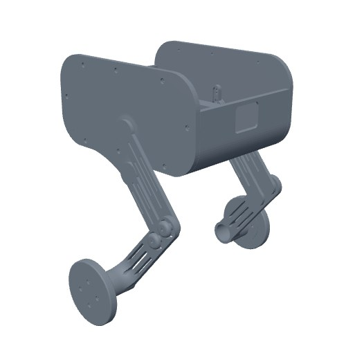
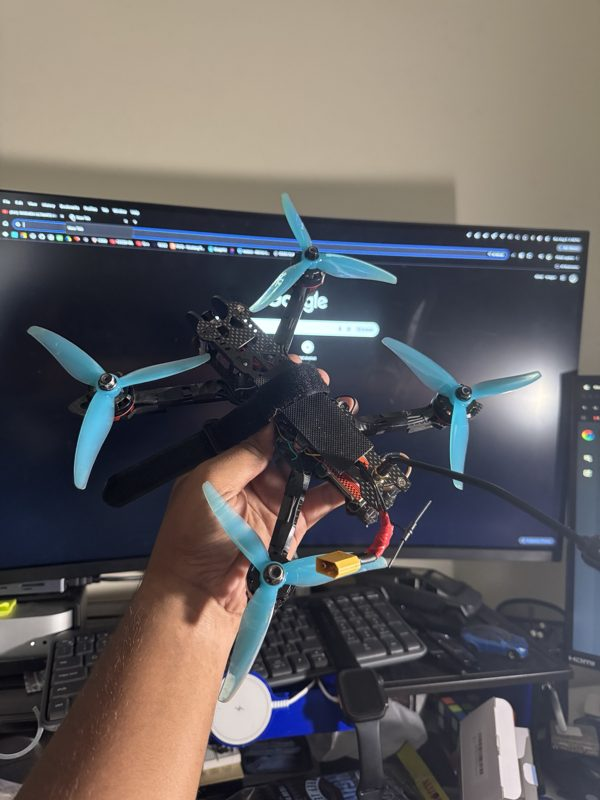

Hi, I'm Drishya.
I'm a computer science senior at the University of Southern Mississippi, and I spend most of my time building hardware for underwater robots.
I lead hardware for the USM RoboSub team and work as an undergraduate research assistant in the USM Robotics Lab. My work is mostly the physical side of a robot: designing parts in Fusion 360, 3D printing and testing them, planning power and wiring, and figuring out how to keep electronics dry. I graduate in May 2027 and I'm looking for a full-time hardware role starting June 2027.

- Reached the semifinals at RoboSub 2026, our team's first year competing
- We were the first team from Mississippi to compete at RoboSub
- Our team was awarded two Blue Robotics T200 thrusters with ESCs in 2026
- Two years in the USM Robotics Lab
- President's List the last two semesters
Selected work

MARV 2.0 underwater vehicle
The 2027 RoboSub vehicle I'm designing, from the full CAD model to the electronics tray and ballast system.

Quick-release hull clamp
A printed clamp that took hull access from 5 to 10 minutes down to a few seconds.

Self-balancing robot
A personal project: a two-wheeled robot with jointed legs, run by an ESP32 and a Raspberry Pi 5.

FPV drones
Three drones built from scratch over the summer, including reviving an old one with a modern receiver.
Get in touch
The best way to reach me is email at drishya.bashyal@usm.edu. I'm also on LinkedIn.